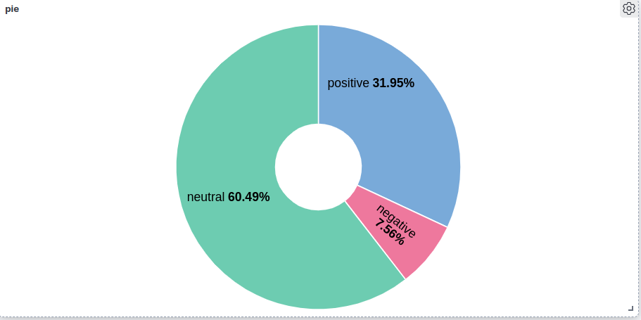
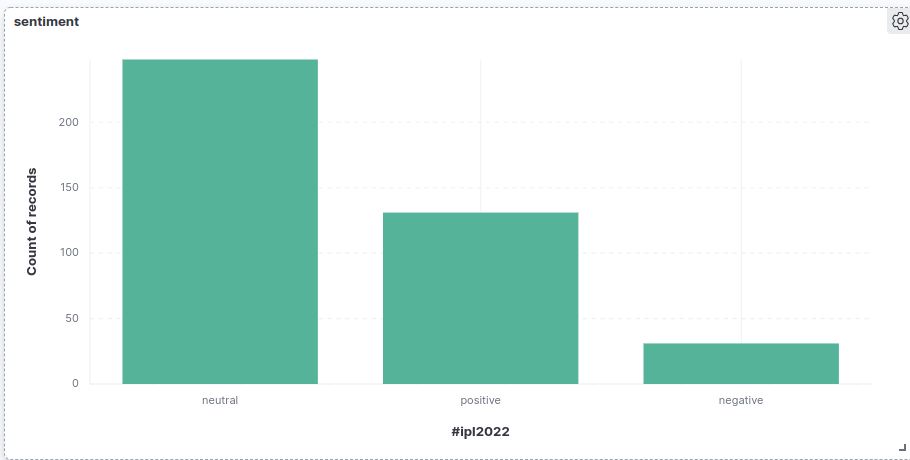

📡 Streaming with Real-time Tweets
Measuring live public sentiment for a trending hashtag, end to end in real time: ingest, process, index, visualize.
01Problem
During a live event, sentiment moves minute to minute. A batch job that analyzes yesterday's tweets misses that. The goal was a pipeline that takes tweets for a hashtag (#ipl2022 in the demo), classifies each one as it arrives, and shows the sentiment split on a dashboard that updates continuously.
02Architecture
- Ingest:
scrapper.pysubclasses tweepy'sStreamingClient, registers a hashtag rule, and publishes each tweet's text to the Kafka topictweets. - Process:
sentimental.pyis a Spark Structured Streaming job that reads the topic, applies a polarity UDF (<0 negative, =0 neutral, >0 positive), and appends results. - Serve: the es-hadoop connector streams rows into the Elasticsearch index
new_tweets; Kibana charts thepolarityfield. - Side experiment:
clustering.pyreads the same topic every 30 seconds and runs Spark MLlib K-Means, writing scatter plots.
03Key decisions & trade-offs
Kafka between ingestion and processing
Why: It separates the bursty Twitter stream from Spark. If Spark restarts, tweets wait in the topic instead of being lost, and a second consumer (the clustering job) was added without touching the producer.
Trade-off: One more service to run and monitor (ZooKeeper + broker) for a single-producer pipeline.
Spark Structured Streaming with a checkpoint
Why: checkpointLocation lets the job resume from its last offsets after a crash, and the same DataFrame API works for the streaming job and the batch clustering job.
Trade-off: Heavier than a plain Python consumer; for this volume a lightweight consumer would also work, but Spark is the path that scales.
Lexicon sentiment (TextBlob) instead of a trained model
Why: No labeled data or training needed, and the UDF is fast and deterministic, so the focus stays on the streaming architecture.
Trade-off: It misses sarcasm, emojis and cricket slang, and many short tweets score exactly 0, which inflates the neutral share (about 60% in the sample).
Elasticsearch + Kibana for the serving layer
Why: Near-real-time aggregations and dashboards without building a frontend.
Trade-off: Needs Elasticsearch heap tuning for real volume; dashboards are configured by hand rather than as code.
04Results
The pipeline ran end to end on live tweets. In the sample shown below, the split settled at about 60% neutral, 32% positive and 8% negative, and the bar chart updated as new tweets arrived.


.env.example in the repo); nothing secret is committed.05What I'd do differently
- Replace TextBlob with a transformer sentiment model trained on tweets, served as a pandas UDF, and measure it against a labeled sample.
- Send structured JSON (tweet id, timestamp, language, metrics) instead of raw text, so dashboards can slice by time and deduplicate.
- Rebuild the clustering experiment on TF-IDF or embedding features rather than polarity alone.
- Package Kafka, Spark, Elasticsearch and Kibana in Docker Compose for one-command setup, and monitor consumer lag.